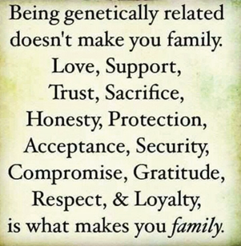
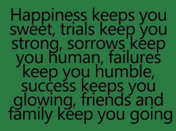

TOUGHLOVE© New Zealand Incorporated is a community-based, not-for-profit organisation with tax-exempt charitable status.
Programme delivery is reliant primarily on TOUGHLOVE© parents who work as volunteer Reps and financial support provide by national and local community funding agencies.
Activities are funded also by membership fees, the sale of Programme materials, workshops and donations.
TOUGHLOVE© is a self-help Programme that aims to directly assist parents and youth in a holistic manner, but which benefits the wider community also. Through a combination of philosophy and action, the Programme aims to bring about positive change and outcomes for families.
TOUGHLOVE© is both a crisis intervention and family support programme. Structured support Group meetings are designed to give parents the confidence and skills to deal with a wide range of problems associated with unacceptable adolescent-type behaviour. The Programme this offers a proven, well-recognised framework for developing coping strategies and solutions for problems such as lying, verbal abuse, truancy, running away, and drug or alcohol abuse as well as for other more serious criminal, destructive or self-destructive behaviours.
In 1985 the first TOUGHLOVE® Parent Support Group in New Zealand was established in Wellington by Valerie Blennerhasset. Valerie set up the “Parent Support using TOUGHLOVE®” Trust after an article in the NZ Herald resulted in over 800 letters of enquiry. Valerie imported materials from the founders of TOUGHLOVE® the York’s in America, and used every opportunity to promote TOUGHLOVE®. These efforts resulted in several newspaper articles, a television documentary and radio interviews.
More Groups were subsequently formed and in 1990 members from 75 Support Groups came together for the inaugural meeting of a formally constituted national body known as TOUGHLOVE® New Zealand incorporated or TLNZ. Eventually ten affiliated regional associations were established to manage delivery of the TOUGHLOVE® Programme across New Zealand.
In 1993 TLNZ entered into a licensing agreement with Phyllis and the late David York. This authorised TLNZ Inc., to represent TOUGHLOVE® in New Zealand, Australia and the South Pacific. The agreement led to the first New Zealand REPCAT – Representatives Conference and Training – taking place in Auckland in 1994. Previously New Zealanders had travelled to America at considerable and often personal expense for training to become a TOUGHLOVE® Representative.

